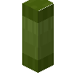

Green Rain Gutter Downspout
mcwroofs:gutter_middle_green
英文名: Green Rain Gutter Downspout命名空间 ID:
mcwroofs:gutter_middle_green类型: 方块所属模组: Macaw's Roofs资料检索: 🔎 在 MC百科 搜索「Green Rain Gutter Downspout」合成获得 (1)
有序合成Macaw's Roofs
原始 JSON
{
"type": "minecraft:crafting_shaped",
"group": "gutter_middle",
"pattern": [
"BBB",
"BAB",
"BBB"
],
"key": {
"B": {
"item": "mcwroofs:gutter_middle"
},
"A": {
"item": "minecraft:green_dye"
}
},
"result": {
"count": 8,
"id": "mcwroofs:gutter_middle_green"
}
}